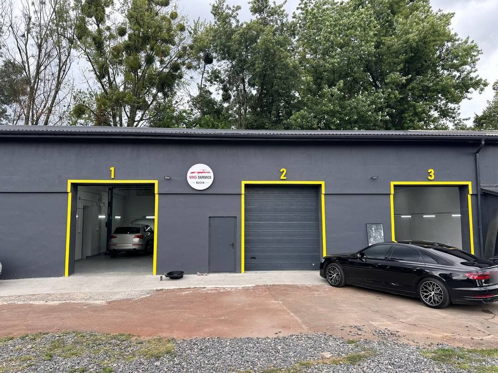
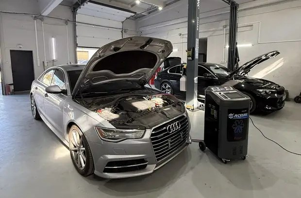
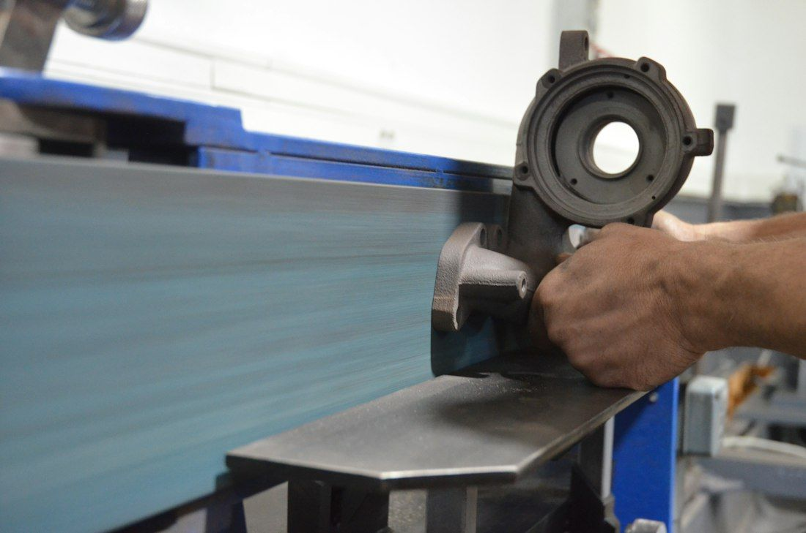
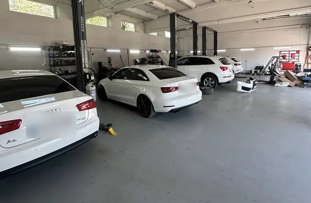
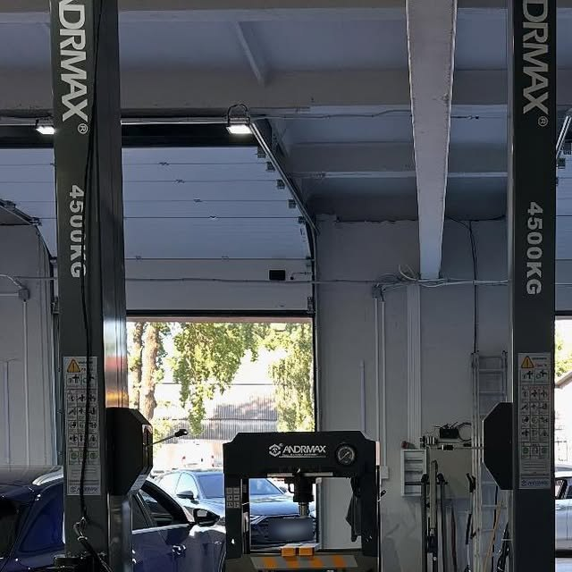

Комп’ютерна діагностика
Двигун, зчеплення, ходова й підвіска, електрообладнання, гальма, вихлоп. Спершу знаходимо причину, потім погоджуємо ремонт.
СТО VAG-групи · Буча
Ремонт і обслуговування Volkswagen, Audi, Škoda, Seat і Porsche. Діагностика, двигуни, турбіни, форсунки — а вартість ремонту погоджуємо заздалегідь.

4,7Профіль сервісу
Від планового ТО до мотора, турбіни чи DSG. Допоможемо підібрати перевірені запчастини під ваш бюджет.
Двигун, зчеплення, ходова й підвіска, електрообладнання, гальма, вихлоп. Спершу знаходимо причину, потім погоджуємо ремонт.

Ремонт ГБЦ і заміна прокладки, ланцюг і ремінь ГРМ з роликами, помпа, термостат, радіатор охолодження.
Коробки DSG, ремонт МКПП, заміна й доливання масла в КПП і АКПП. Зчеплення: диск, корзина, вижимний підшипник, двомасовий маховик.

Один з основних напрямків сервісу — поряд із діагностикою, двигунами та форсунками.
Промивання та заміна форсунок, дросельна заслінка. Бензинове упорскування і дизель: ТНВД, насос-форсунки.
Очищення впускних клапанів гранулами шкаралупи горіха. Актуально для моторів з безпосереднім упорскуванням — TSI і TFSI, де на клапанах накопичується нагар.
Приймаємо й інші марки — раді допомогти власникам авто з Бучі, Ірпеня, Гостомеля та Ворзеля.
Масло в двигуні та КПП, фільтри, антифриз, свічки, колодки й гальмівні диски, ремінь генератора.
Амортизатори, сайлентблоки, кульові, рульова рейка, ГУР/ЕУР, ШРУСи, маточини. Балансування і шиномонтаж.
Стартер і генератор, акумулятор і його зарядка, запалювання, автолампи, діагностика електрообладнання.
Заправка та ремонт кондиціонера, очищення системи вентиляції, клімат-контроль, радіатор опалення.
Діагностика гальмівної системи, заміна рідини. Каталізатор, лямбда-зонд, полум’ягасник.
Евакуатор і автодопомога на дорозі, експертиза стану авто, передпродажна підготовка, захист двигуна.
Сервіс зсередини
Поки ми працюємо з авто, можна почекати в зоні відпочинку — з Wi‑Fi і телевізором.


Як працюємо
«Працюємо на совість, а вартість ремонту завжди узгоджуємо заздалегідь.» — VAG Service Bucha
Опишіть симптоми — домовимось про зручний час заїзду.
Знаходимо причину несправності, перш ніж щось міняти.
Називаємо ціну робіт і запчастин до початку ремонту. Підберемо деталі під ваш бюджет.
Робимо, перевіряємо і віддаємо авто з гарантією на виконані роботи.
Контакти
| Понеділок | 09:00 – 18:00 |
|---|---|
| Вівторок | 09:00 – 18:00 |
| Середа | 09:00 – 18:00 |
| Четвер | 09:00 – 18:00 |
| П’ятниця | 09:00 – 18:00 |
| Субота | 10:00 – 15:00 |
| Неділя | вихідний |
Подзвоніть або напишіть — підкажемо, з чого почати, і запишемо на зручний час.